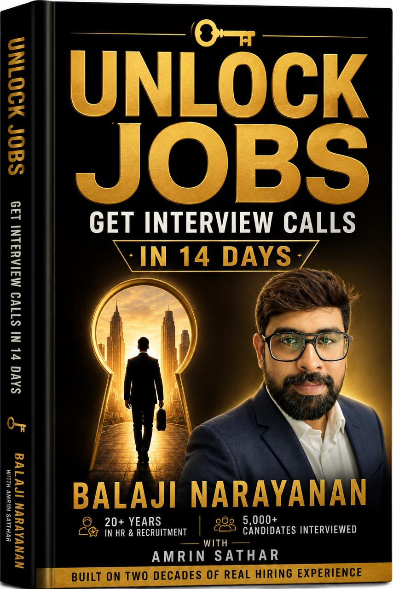

20+ Years of Real Hiring Experience
Get Interview Calls in 14 Days
Most capable professionals aren't rejected for lacking skill — they're filtered out before a recruiter ever reads their resume. UNLOCK JOBS is written from the other side of the hiring table, breaking down exactly how recruiters shortlist, and giving you a 14-day system to fix your visibility, your positioning and your outreach.
19 Chapters · 14-Day Action Plan · AI Prompt Kit

Why It Works
20+ years reviewing resumes, shortlisting candidates and sitting across the table — turned into a step-by-step playbook for you.
No generic pep talks. The exact resume, ATS, LinkedIn and outreach fixes that get you noticed by the people who hire.
Every chapter converts into a daily task, so you finish knowing exactly what to do next — not just what went wrong.
See It in Action
I finally understood why my resume was getting rejected before a human ever read it. Fixed my ATS formatting in a single evening.
The LinkedIn changes alone got me three recruiter messages in a week — after months of being completely invisible.
This isn't another "believe in yourself" career book. It reads like what a recruiter would tell you if they actually liked you.
What You'll Learn
Everything between where you are now and getting shortlisted — laid out in order.
How recruiters filter and shortlist before a human reads your resume.
Positioning, ATS formatting and job-description matching.
A profile recruiters actually find and message first.
Naukri and portal strategy that surfaces your profile.
Why your response rate is low, and exactly how to fix it.
Visibility strategy if you're working, or coming back after a gap.
Prompts and workflows for resumes, research and interview prep.
Convert every insight into daily execution.
Real interview guidance from the other side of the table.
The Blueprint
No promise of a job in 14 days — just total clarity on what to do, every single day.
Diagnose why you're invisible: resume, ATS and profile audit.
Rewrite your resume and positioning around what recruiters scan for.
Fix your LinkedIn and portal visibility so recruiters find you first.
Reach recruiters directly with the scripts and AI prompts inside.
Walk into interviews with recruiter-side insight and real confidence.
Written By
Inside the Book
How hiring changed, and how recruiters shortlist.
Resume, positioning, ATS and job-description strategy.
A profile and visibility strategy that actually works.
Naukri and other relevant portal usage.
Why calls are low, and how to reach recruiters directly.
Visibility strategies for the employed and the returning.
Tools, prompts, workflows and responsible use.
Convert knowledge into daily, measurable action.
Interview guidance from the recruiter's perspective.
The Complete System
One-time payment · Instant digital access
Get the 14 Day BlueprintTwenty Years, One System
Stop applying blindly. Learn how hiring really works, and position yourself to be found.
UNLOCK JOBS — Get Interview Calls in 14 Days
₹499